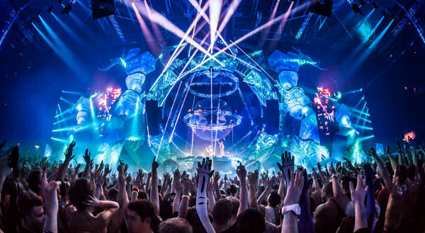
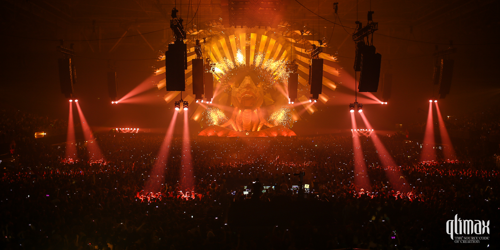

QLIMAX


Info
Info
Qlimax is een hardstyle-dancefeest dat eenmaal per jaar in het GelreDome, Arnhem gehouden wordt, onder organisatie van Q-dance. In 2001 waren er drie edities. Eerdere locaties van het feest was Thialf in Heerenveen. Vaak is er een hardcore-afsluiter op het hardstyle-gedomineerde feest. Ook werd in 2006 en 2007 jump gedraaid. 2008 werd door Mark Sherry met hardtrance geopend waarna Showtek direct met hardstyle begon. In 2009 mocht Isaac het evenement openen met early hardstyle.
Qlimax werd vanaf 2006 ook druk bezocht door fans uit het buitenland, vooral uit België, Duitsland en Frankrijk.
Prijs
Uitverkocht!